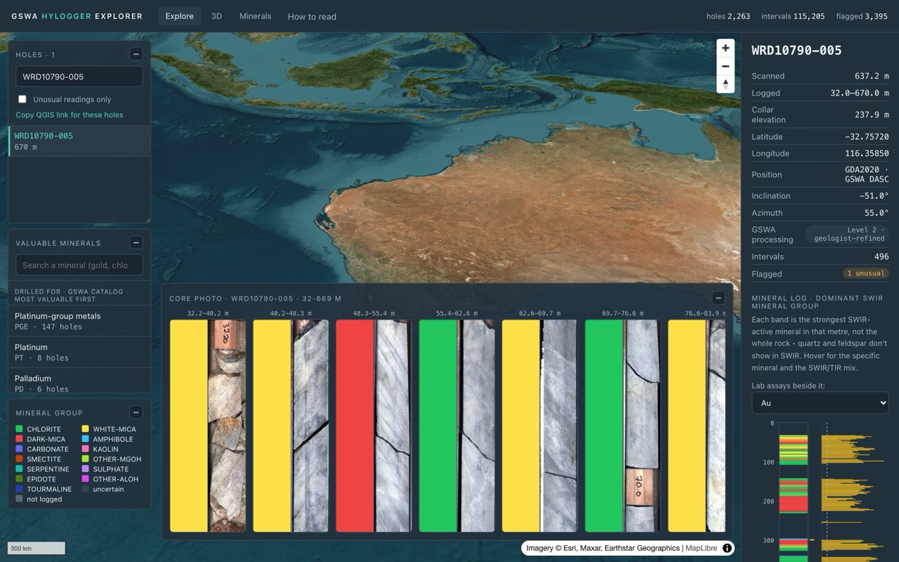

Explore
A satellite map of every HyLogger hole, each drawn in 3D at its real dip and azimuth. Click a hole to open:
- its mineral log, with untrustworthy metres hatched grey and the reason given on hover;
- the rock the company logged, beside the minerals on the same depth scale;
- its company assays beside both;
- its core tray photos, stitched into one strip.

